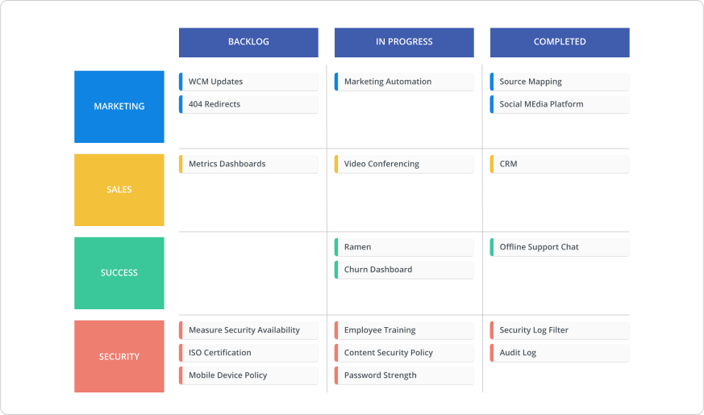
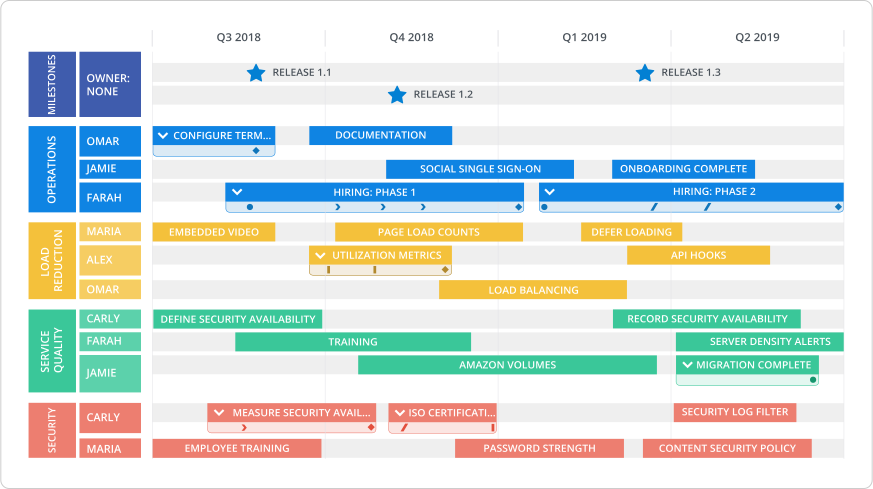

One of the most popular roadmaps in our template library is the technology roadmap. And its popularity is a result of its broad application.
“Technology roadmap” is an umbrella term that encompasses several different roadmap sub-types and iterations. A few examples include:
- Development roadmap
- Application roadmap
- Internal IT systems roadmap
One of the broadest—and most universal—applications of this type of roadmap, however, is defining and documenting the administration of an organization’s internal IT system. So, as an example, let’s walk through what this type of roadmap looks like.
Since most organizations use a hefty collection of tools, maintaining this stack is often complex and taxing on resources. An internal IT systems roadmap helps teams implement a clear plan of action and make smarter decisions about technology.
We created a free guide to help you identify & build the right technology roadmap. Download it here.
So much tech, too little time
The amount of technology that organizations use in day-to-day operations is a little bananas. Think of all the business apps and tools that make it possible for you and your co-workers to get shit done—customer relationship management, marketing automation, content management systems, accounting platforms, HR portals, video conferencing, and on and on.
The technology roadmap can be used to plan when/how new apps and tools will be implemented—as well as who will be involved in the process. It can also be used to outline when upgrades and improvements to an existing stack will take place and when parts of it will be moonlit.
For example, retiring a CRM system to onboard a new one is an arduous project that involves multiple stakeholders and a lot of finicky tasks like data migration. A technology roadmap can break this process into bite size pieces over a quarter. It sets expectations for all impacted team members, keeps everyone on track, and aligns everyone to the goal of pushing the new system live.
Charting IT initiatives helps organizations determine which apps and tools to prioritize based on their impact on achieving bigger short-term and long-term goals. Maybe the new CRM system will boost the productivity of the sales team by “X” amount and therefore help them close “Y” amount of deals to get annual recurring revenue to “Z” amount. So, maybe onboarding the marketing team’s new analytics platform gets pushed out to next quarter because its impact on the organization’s bigger goal of getting that $$$ is slightly less significant.
Ultimately, the IT systems roadmap exists to align the organization on the when and why of what’s happening to IT. This type of roadmap is most effective when managed by the administrators of tech—be it a dedicated IT team or an operations manager. However, just as important is the input from each stakeholder team to enable the keepers of IT to clearly understand the needs and objectives that each function requires from their technology stack.
What an IT systems roadmap looks like
There are a couple ways to approach this type of roadmap. The swimlane view of our technology roadmap template is particularly helpful for getting a high-level understanding of what’s going on in IT for each department. Marketing will be able to understand, at a glance, the status of the latest tech to be added or upgraded.

For teams that want to get really granular with the administration of their IT system, I recommend the timeline view.

The timeline view makes it easy to visualize the timing and resourcing for the technology resources in your pipeline.
You can pivot your roadmap to tell a very detailed story of how IT administration will roll out over a specific time period. For example, you can showcase which employee is spearheading each initiative and when it will be completed, like in the example above.
The timeline view also lets you add milestones to your roadmap. Milestones are the key achievements of your IT administration strategy—like releasing upgrades. Milestones showcase progress and rally the team around deadline-oriented goals, keeping everyone on course.
So, give our technology roadmap a whirl to organize your IT systems administration and build a solid plan of action.
Ready to build your own tech roadmap? Check out our ready-to-use templates.